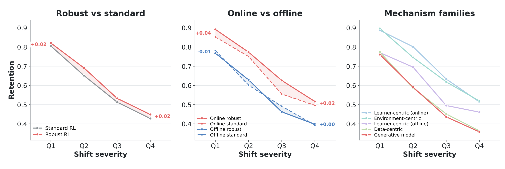

This comparison matches the training budget of ATLA-PPO, ATLA-SA-PPO, RAMBO and RORL to that of the standard RL references and reports RFQI at its last checkpoint, as every other method. Everything else is unchanged.
Nominal score and score under shift on the library-wide grid, original → unified.
| Method | Nominal | Score under shift |
|---|---|---|
| ATLA-PPO | 72.4 → 78.6 | 53.4 → 55.5 |
| ATLA-SA-PPO | 77.6 → 72.4 | 59.6 → 55.5 |
| RFQI | 79.3 → 62.3 | 43.6 → 42.0 |
| RORL | 79.3 → 63.8 | 45.3 → 39.4 |
| RAMBO | 95.5 → 85.7 | 53.7 → 46.7 |

The conclusions of the original setup hold in this comparison.
More of the unified comparison: isolated and compound shifts · full results per configuration